Ubuntu Server с нуля: установка на отдельный компьютер
Для человека, который прежде работал только в Windows. Версия руководства: 8 ноября 2026 года.
Что делаем: устанавливаем Ubuntu на отдельный компьютер, примерно как Windows с установочной флешки. Затем настраиваем его так, чтобы управлять им со своего Windows-компьютера.
Как пользоваться: анимация объясняет смысл действий, а эта инструкция подробно разбирает установку на отдельный компьютер с пустым диском.
Если встретилось незнакомое слово: рядом будет короткое объяснение. Более подробные значения собраны в словаре простыми словами. Не нужно заранее знать или заучивать весь словарь.
Это подробная инструкция для самостоятельной установки. У меня нет сведений о модели и дисках твоего будущего физического сервера; физическую установку на нём я не выполнял. Цветные карточки созданы для объяснения каждого шага. Чёрно-оранжевые снимки установщика взяты из официальной документации Canonical, а не с твоего компьютера. Названия и расположение пунктов могут немного отличаться в разных версиях установщика.
Для примера выбрана Ubuntu Server 24.04 LTS — вариант Ubuntu для серверных задач с длительной поддержкой. Он относится к тому же семейству, что наша учебная виртуальная машина. На дату подготовки уже доступна Ubuntu Server 26.04.1 LTS, а на официальной странице также предлагается 24.04.5 LTS. Для нового рабочего внедрения версию выбирают ещё и по поддержке оборудования и нужного приложения. Это руководство не означает, что 24.04 — самая новая версия или что любой выпуск любого Linux устанавливается точно такими же экранами.
Как читать руководство
Каждый номер — отдельный шаг. Вначале показана поясняющая карточка, затем действия, объяснение и ожидаемый результат. До первого входа почти всё делается в меню установщика; команды Linux вводить ещё негде. Обозначения «Windows» и «Ubuntu» над примерами показывают, на каком компьютере выполнять действия.
В примере один пустой SSD — накопитель для системы и файлов, обычный компьютер с процессором Intel или AMD и подключение кабелем к домашнему роутеру. Роутер — устройство, которое дома соединяет компьютеры с сетью и обычно с Интернетом. Создадим пользователя adminuser, имя сервера ubuntu-srv. Условный адрес нового сервера — 192.168.1.50; фактический адрес узнаёшь в своей сети. Это отдельная установка: пароль создаёшь новый и хранишь его у себя.
Если на компьютере несколько дисков, есть важные данные или нужно оставить Windows рядом с Ubuntu, сначала нужен отдельный план: что сохраняем и куда ставим систему. То же относится к RAID — объединению нескольких дисков — и шифрованию, то есть защите содержимого диска ключом. Ниже разобран понятный первый сценарий с одним пустым диском.
Что делает установка: подготавливает диск, записывает на него Ubuntu и программы, нужные для её работы, создаёт пользователя и настраивает запуск компьютера с этого диска. После перезагрузки ты входишь в Ubuntu. И только потом добавляешь то, ради чего нужен сервер: например, программу, которая показывает сайт, или общий доступ к файлам. Названия внутренних компонентов пока знать не требуется.
Шаг 1. Подготовь компьютер и пойми, что именно будет установлено
Подготовь: отдельный компьютер, пустой исправный SSD, монитор, клавиатуру, Ethernet-кабель, доступ к роутеру, флешку от 8 ГБ и Windows-компьютер для подготовки флешки. Практичный учебный ориентир — 4 ГБ ОЗУ или больше и SSD от 40 ГБ; это запас для удобства обучения, не официальные минимальные требования. Для реальных баз данных и приложений ресурсы считают отдельно.
Сделай: заранее скопируй нужные данные с выбранного диска и флешки. Если в компьютере есть другие диски с важными данными, при возможности отключи их на время установки, выключив питание компьютера перед работой с внутренними подключениями. Так проще не ошибиться с назначением диска.
Параллель с Windows: ты собираешься установить ОС примерно как с установочной флешки Windows. Само слово «сервер» не означает особую магическую коробку: обычный компьютер тоже может выполнять серверные службы.
Ожидаемый результат: понятно, какой конкретно диск можно полностью отдать Ubuntu, и сохранены данные, которые нельзя потерять. Запись флешки и разметка системного диска — две разные операции с разными накопителями.
Шаг 2. Выбери версию Ubuntu для своего компьютера
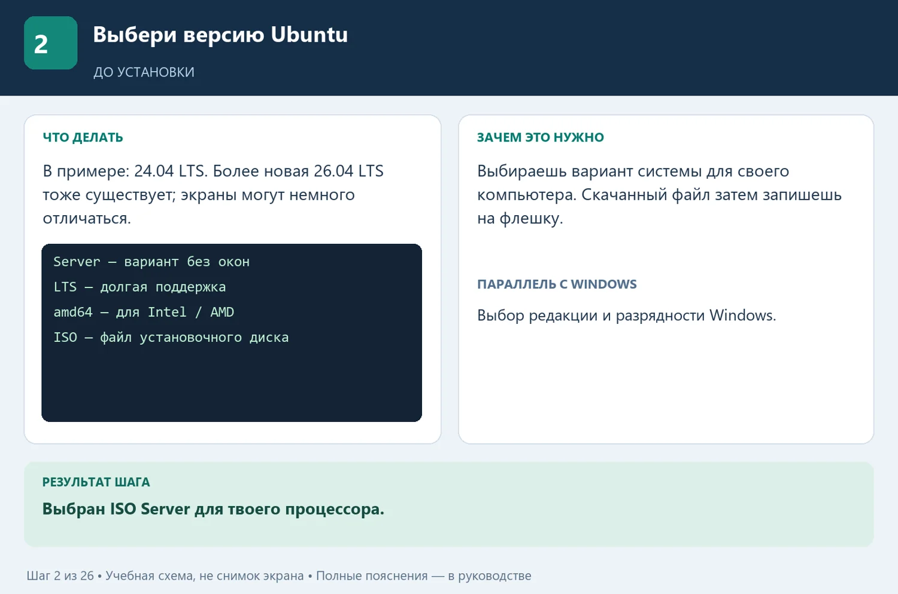
На Windows открой официальную страницу Ubuntu Server. Для обычного современного процессора Intel или AMD выбирай Intel or AMD 64-bit / amd64. Название amd64 подходит и Intel. Образ ARM64 нужен для другого типа процессора, а не потому, что он «новее».
Server — вариант для серверных задач. Сервером называют компьютер или программу, которая выполняет работу для других устройств: например, хранит общие файлы или отдаёт страницы сайта. В этой установке привычного рабочего стола с окнами не будет. Desktop — вариант с графическим рабочим столом. Обе системы Linux; отсутствие окон в Server — выбранная комплектация. LTS — выпуск с длительной поддержкой: производитель дольше выпускает для него обновления по условиям поддержки.
Для соответствия этому примеру выбери 24.04 LTS в дополнительных выпусках; если выберешь поддерживаемую 26.04 LTS, общий порядок останется похожим, но сверяй пункты своего установщика. Для установки на компьютер нужен файл ISO, а не OVA/VMDK/cloud image, который мы раньше импортировали в VMware.
Ожидаемый результат: выбраны дистрибутив, поддерживаемый выпуск, серверная комплектация и правильная архитектура. Для Astra, Альт, РЕД ОС, Debian и других систем нужно брать их собственные установочные образы и инструкции.
Шаг 3. Скачай установочный файл и проверь его
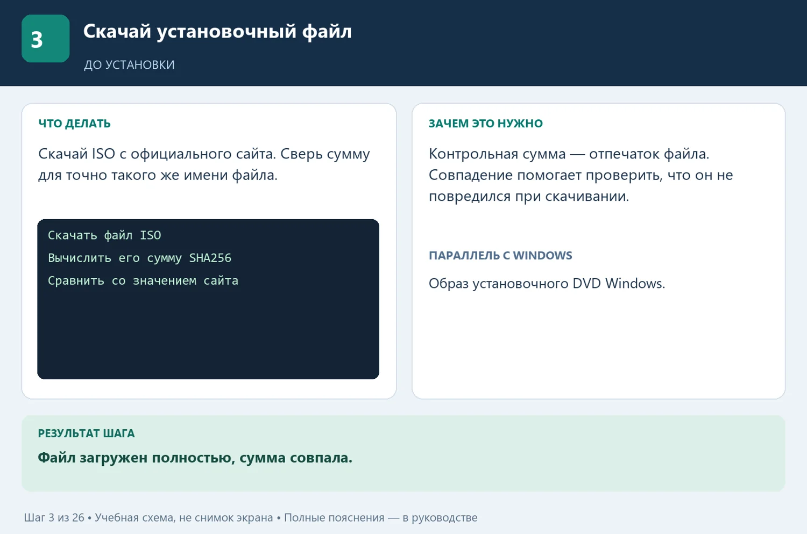
Скачай ISO на диск Windows, например в E:\Linux\images. Не нужно просто копировать ISO на флешку и ожидать, что любой компьютер с неё загрузится: следующим шагом специальная программа запишет установочный носитель.
В каталоге официального выпуска есть файл SHA256SUMS. Он содержит контрольные суммы образов. В PowerShell Windows можно вычислить сумму скачанного файла:
Get-FileHash 'E:\Linux\images\ubuntu-24.04.5-live-server-amd64.iso' -Algorithm SHA256
Здесь указан пример имени из выбранной ветки; подставь фактический путь скачанного ISO. Get-FileHash читает файл и вычисляет его цифровой отпечаток, -Algorithm SHA256 выбирает алгоритм. Сравни поле Hash со строкой для точно того же имени файла в официальном SHA256SUMS. Регистр букв шестнадцатеричной суммы не важен.
ISO — один файл с содержимым установочного диска. Слово «образ» здесь означает сохранённое содержимое диска, а не картинку.
Параллель с Windows: такой же тип файла используют для установочных образов Windows. Проверка суммы помогает заметить повреждение или несовпадение скачивания; проверка подписи файла сумм — отдельный, более строгий этап, описанный в официальной инструкции проверки образов.
Контрольная сумма — длинная строка символов, рассчитанная по содержимому файла. Совпадение помогает проверить, что скачан тот же файл, который выложен на сайте.
Ожидаемый результат: ISO скачан полностью, контрольная сумма совпадает. Размеры и суммы у разных сборок различаются: нельзя брать сумму от OVA нашей ВМ и сравнивать с новым ISO.
Шаг 4. Сделай установочную флешку в Windows
В качестве конкретного инструмента используем Rufus с официального сайта. Здесь описана работа с ним, саму флешку в рамках подготовки руководства я не записывал.
- Подключи флешку и открой Rufus.
- В Device / Устройство выбери именно флешку: проверь модель и ёмкость.
- В Boot selection / Метод загрузки нажми SELECT / ВЫБРАТЬ и укажи ISO Ubuntu Server.
- Начни с параметров, которые Rufus предложит после выбора ISO. На современном компьютере с UEFI возможен вариант GPT + UEFI; для старого Legacy BIOS параметры отличаются. Не надо одинаково переключать все компьютеры в Legacy.
- Нажми START / СТАРТ. Если предложен режим записи ISOHybrid, обычный первый вариант — Write in ISO Image mode. Если Rufus запросит необходимые дополнительные файлы, прочитай сообщение.
- Перед подтверждением стирания ещё раз проверь выбранное устройство. Все данные на этой флешке будут заменены.
- Дождись READY / ГОТОВ и безопасно извлеки флешку.
Ожидаемый результат: записана загрузочная флешка. Если Windows позже предлагает её отформатировать, это не обязательно поломка: Windows может не понимать созданные разделы; форматирование уничтожит установочный носитель. Подробности: актуальная инструкция Canonical для создания USB.
Шаг 5. Подключи всё нужное и запусти компьютер с флешки
Подключи к будущему серверу монитор, клавиатуру, Ethernet-кабель от роутера/коммутатора и подготовленную флешку. Включи компьютер и открой Boot Menu — меню однократного выбора загрузочного устройства. Часто это F12, F11, F8 или Esc, но конкретную клавишу смотри на стартовом экране или в инструкции своей модели. F2/Del нередко открывают настройки прошивки, а не само Boot Menu.
Выбери флешку. UEFI и BIOS — встроенные программы компьютера, которые запускаются первыми после включения и выбирают, откуда начать загрузку. UEFI — современный вариант. Если флешка показана как UEFI: название, на современном компьютере выбирают этот пункт.
Ethernet — обычное сетевое соединение кабелем. Для первой установки оно проще Wi-Fi: меньше вопросов с драйверами — программами для работы с оборудованием — и паролями.
Параллель с Windows: это тот же этап, где при установке Windows выбирают загрузку с установочной флешки. UEFI/BIOS работает ещё до Linux.
Если компьютер вернулся в старую ОС, он, вероятно, загрузился с прежнего диска. Если флешки нет в списке — проверь запись, порт USB, выбранный режим и руководство оборудования. Secure Boot и режим контроллера SATA/RAID не надо переключать наугад: это может затронуть существующие системы и видимость дисков.
Ожидаемый результат: управление получил установочный носитель Ubuntu.
Шаг 6. Запусти установщик Ubuntu Server
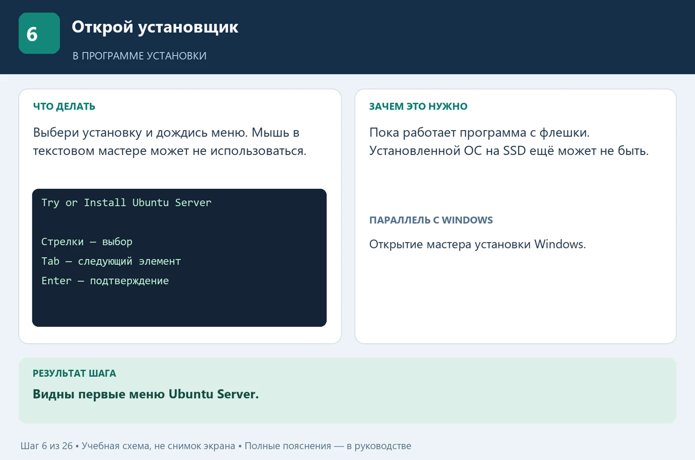
На загрузочном экране выбери пункт установки, обычно Try or Install Ubuntu Server либо близкий по смыслу. После Enter появятся сообщения загрузки и затем меню установщика. Это ещё не установленная система на SSD: сейчас программа работает с флешки и из оперативной памяти.
В текстовом установщике основное управление: стрелки выбирают пункт, Tab / Shift+Tab переводят фокус, Enter подтверждает, Space часто переключает флажок. Активная кнопка обычно подсвечена. Мышь может не использоваться.
Параллель с Windows: ты открыл мастер установки. Чёрный фон и текстовые меню — нормальный интерфейс серверного установщика, а не отсутствие драйвера рабочего стола.
Ожидаемый результат: появился экран выбора языка или начального этапа установки.
Шаг 7. Выбери язык и при необходимости обнови установщик
Выбери понятный язык. Для совпадения названий с этим руководством можно выбрать English; русский язык возможен, если предлагается твоим образом. Язык установщика и раскладка клавиатуры — разные настройки.
Если появляется Installer update available, при работающей сети можно выбрать обновление установщика: он скачает исправления и перезапустится на нужном этапе. Это обновление программы установки, а не переход на другую основную версию Ubuntu. Если сеть пока недоступна, можно продолжить имеющимся установщиком.
Официальный справочный снимок Canonical — экран языка; внешний вид может отличаться от твоей сборки:
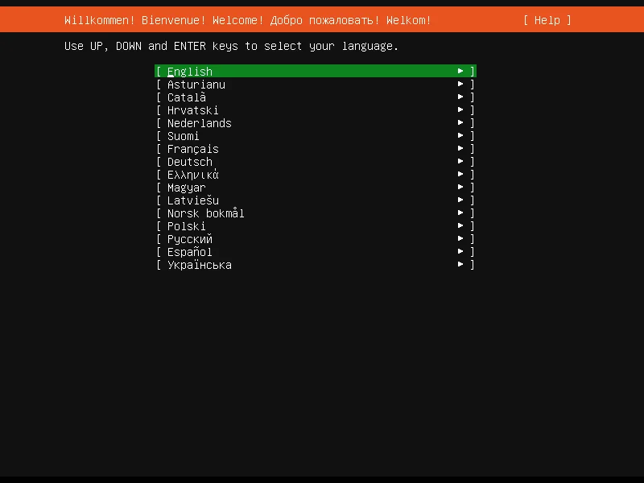
Ожидаемый результат: выбран язык, установщик готов перейти к вводу настроек.
Шаг 8. Настрой клавиатуру
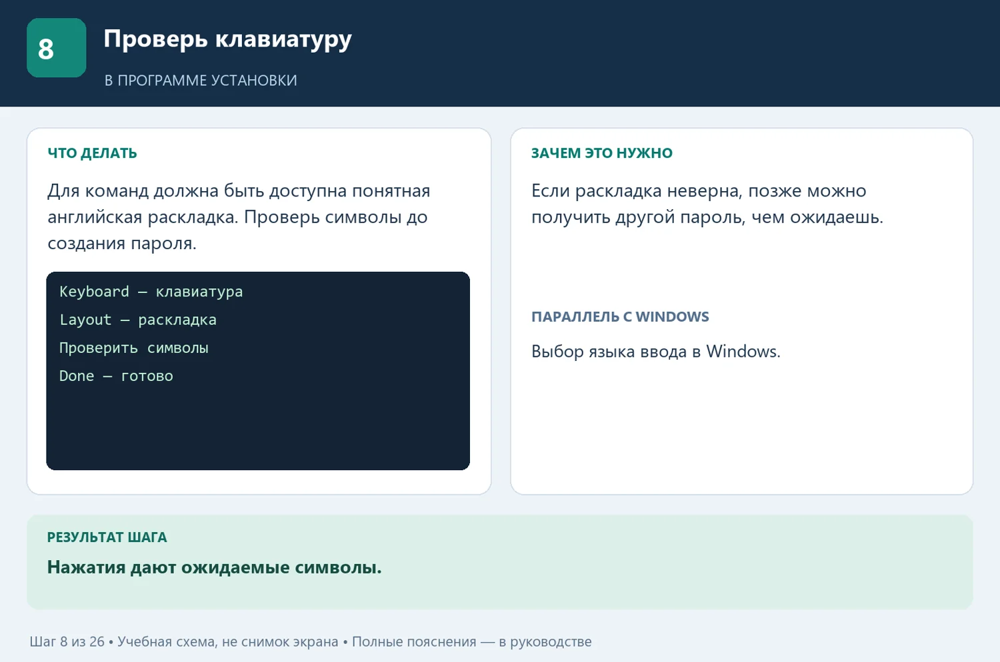
В Keyboard configuration — «Настройка клавиатуры» выбери раскладку и вариант своей физической клавиатуры. Для первого администрирования удобно иметь английскую US-раскладку для команд, имён и пароля; при необходимости дополнительные раскладки настраиваются отдельно. Не выбирай раскладку только по языку текста установщика.
Если есть поле проверки, проверь буквы, цифры и нужные символы. Особенно важно понимать, где находятся /, -, :, @, кавычки и символы пароля. Пароль задаётся позже, поэтому сейчас проще заметить неверную раскладку.
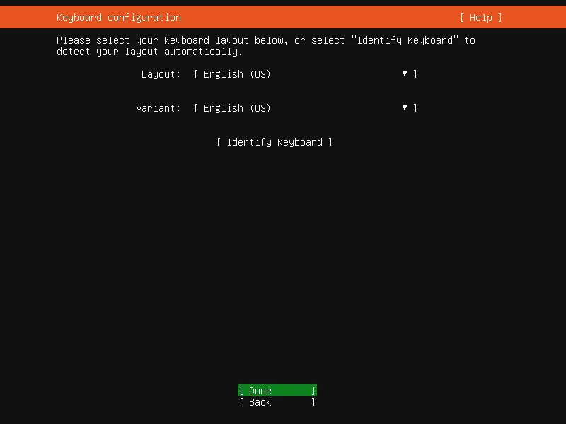
Ожидаемый результат: нажатия дают ожидаемые символы; Done переводит дальше.
Шаг 9. Выбери обычную серверную установку
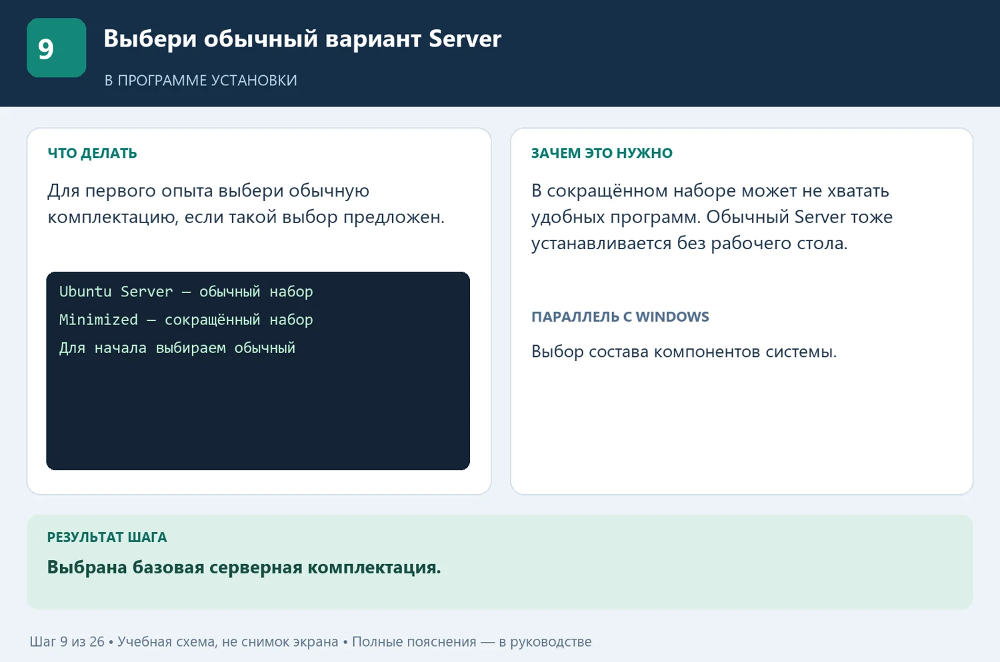
Если установщик предлагает Ubuntu Server и Ubuntu Server (minimized), для первого опыта выбирай обычную Ubuntu Server: в минимальной комплектации может не хватать привычных вспомогательных программ. Это не выбор рабочего стола — графическая оболочка от этого не появится.
Предложения дополнительных драйверов зависят от выпуска и оборудования. Для обычной машины со стандартной сетью и диском достаточно обычного пути; если сетевой адаптер или контроллер не обнаружен, сначала выясни модель и поддержку, а не продолжай рассчитывать, что диск «появится потом».
Ожидаемый результат: выбран состав базовой ОС. В некоторых версиях этот экран расположен раньше или выглядит иначе.
Шаг 10. Получи адрес компьютера в сети автоматически
На экране Network connections — «Сетевые подключения» найди проводное подключение. Сетевой адаптер — устройство, через которое компьютер соединяется с сетью. Он может называться enp3s0, eno1, ens... — имя зависит от оборудования. DHCP — автоматическое получение сетевых настроек. При таком выборе роутер сам выдаёт компьютеру адрес и остальные нужные значения.
Пример для домашней сети: адрес 192.168.1.50/24, шлюз 192.168.1.1. Это пример, не значения для копирования в любую сеть. Запиши фактически выданный адрес. IP-адрес — адрес компьютера в сети, как номер дома. /24 — описание границ этой сети; пока достаточно оставить автоматически выданное значение. Шлюз — путь в другие сети, дома им обычно служит роутер. DNS помогает найти адрес по имени: например, по имени ubuntu.com.
На справочном снимке Canonical показана другая сеть и виртуальный интерфейс: их значения не надо переносить на физический компьютер.
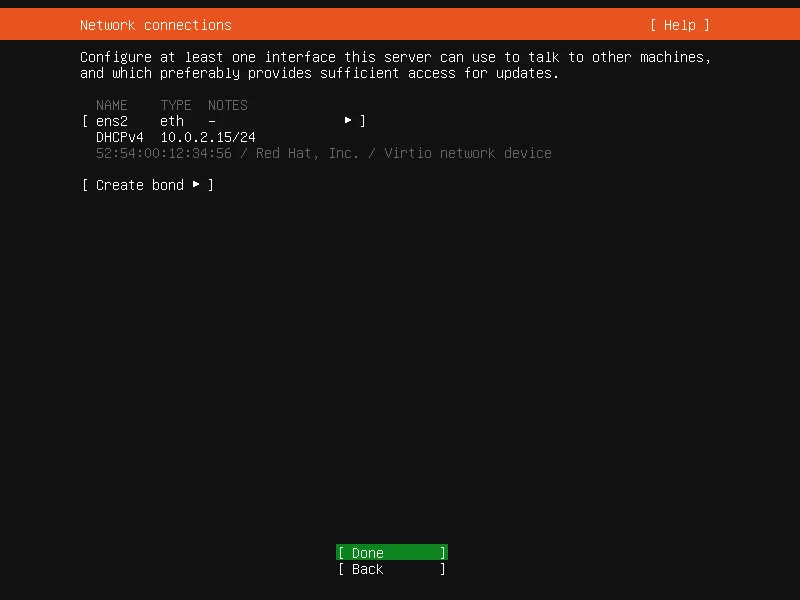
Если адрес не получен, проверь кабель, индикаторы порта, работу роутера/DHCP и наличие интерфейса. В организационной сети параметры может выдавать администратор. Для первого дома выбирай автоматическую настройку, если она работает. Установка возможна без Интернета, но загрузка обновлений и пакетов тогда потребует последующей настройки сети.
Ожидаемый результат: у выбранного интерфейса есть рабочий адрес. Адрес должен соответствовать твоей сети.
Шаг 11. Укажи, откуда скачивать программы
Proxy address — «Адрес прокси». Прокси — промежуточный компьютер, через который программа отправляет запросы в сеть. Если дома всё работает через обычный роутер и никакого прокси тебе не выдавали, оставь поле пустым и нажми Done. В это поле не вводят адрес роутера, DNS или пароль Wi-Fi.
Ubuntu archive mirror — «Зеркало программ Ubuntu». Это сервер, с которого скачиваются программы. Пакет — подготовленный набор файлов программы для установки. Зеркало — другая копия того же набора доступных пакетов. Начни с предложенного установщиком адреса и дождись проверки, если она есть. Если зеркало недоступно, проверь сеть/DNS; затем можно выбрать другое официальное зеркало. Случайные адреса из непроверенных инструкций добавлять не нужно.
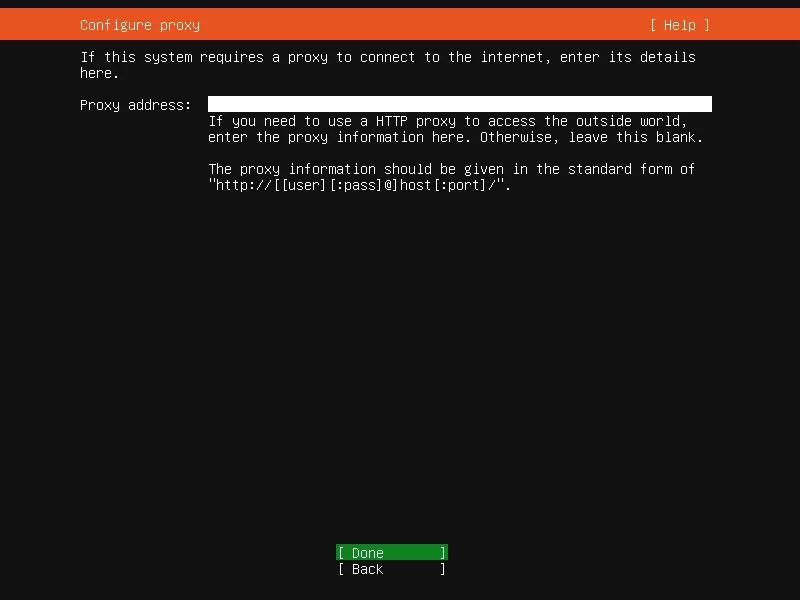
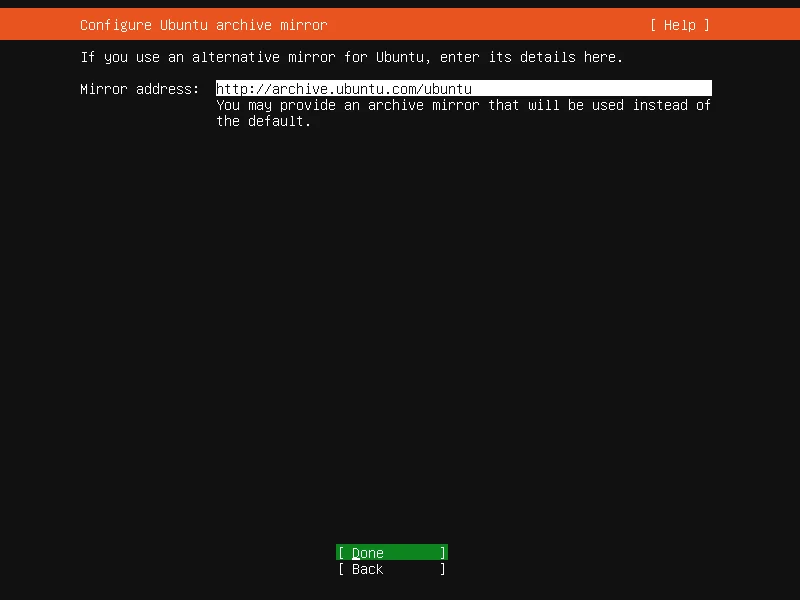
Параллель с Windows: зеркало — источник программ и обновлений; прокси — способ добраться до источника. Это две разные настройки.
Ожидаемый результат: установщик понимает, откуда получать пакеты и нужен ли ему прокси.
Шаг 12. Выбери диск для установки Ubuntu
На экране хранения выбери Use an entire disk — «Использовать весь диск», только если выбранный диск действительно можно полностью отдать Ubuntu. Сверяй модель, серийный номер при наличии и ёмкость. Не ориентируйся только на порядок в списке или знакомую букву: Linux не использует обозначения «диск C» для этого выбора.
Имена устройств могут быть такими: /dev/sda — SATA/SAS/USB-диск, /dev/nvme0n1 — NVMe, /dev/vda — частый пример виртуального диска. USB-флешка тоже накопитель: важно не спутать её с SSD.
Для первой простой установки на один пустой учебный диск можно снять Set up this disk as an LVM group, если флажок есть, и использовать обычные разделы. LVM — дополнительный слой управления томами, полезный для гибкого распределения пространства; он не обязателен для знакомства. Если оставишь LVM, проверь размер тома /: часть места группы может остаться свободной для будущих томов, и это не обязательно потеря диска.
Шифрование LUKS требует продумать, кто и как разблокирует систему при перезапуске; в простом варианте понадобится пароль у консоли на каждой загрузке. Для первой учебной установки без нужды в защите данных можно пройти без него; для рабочего сервера решение принимают по условиям использования, а не по универсальному правилу «всегда включить».
Ожидаемый результат: выбран нужный диск и понятен способ хранения. На данном этапе внимательно проверяется будущий план, а не выполняются случайные команды форматирования.
Шаг 13. Прочитай план разделов и подтверди запись
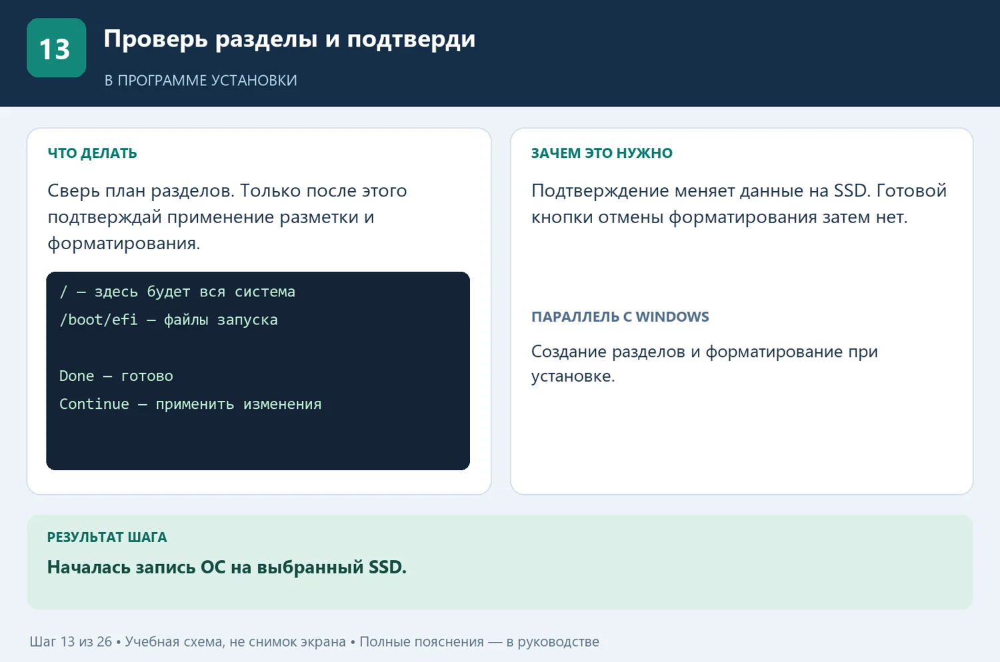
Раздел — участок диска; файловая система — способ хранения файлов на нём; точка монтирования — место в дереве Linux, куда он подключён. / — корень всей системы, он должен существовать. В UEFI-схеме обычно есть раздел EFI, часто FAT32, с точкой /boot/efi; отдельный /boot зависит от схемы. ext4 — название одного из способов хранения файлов на диске, то есть файловой системы. Похожий знакомый пример в Windows — NTFS. Установщик обычно предлагает подходящий вариант сам. Точные размеры загрузочных разделов пусть выбирает установщик для своей схемы.
На справочном снимке ниже показан небольшой виртуальный диск с BIOS-разметкой. Это пример чтения плана, а не шаблон размеров и разделов для твоего UEFI-компьютера:
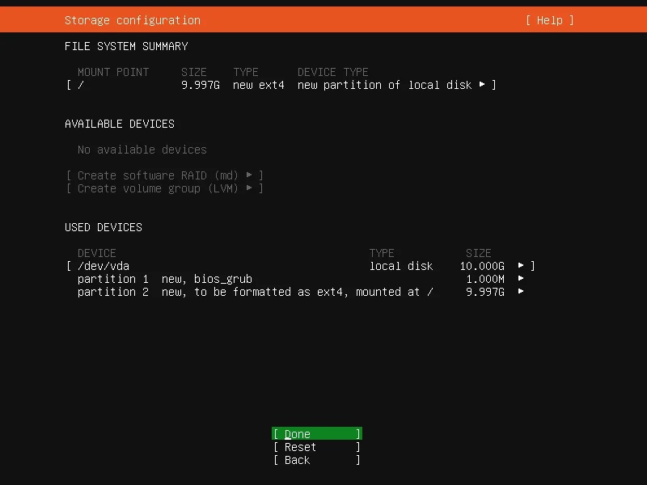
Сверь, что раздел / находится на нужном SSD и имеет ожидаемый объём. Небольшая разница между заявленными ГБ и показанными GiB нормальна; большой свободный остаток в LVM — другой случай, его нужно понять до продолжения.
Выбери Done, затем прочитай итоговое предупреждение и только после проверки подтверди Continue. Вот здесь установщик начинает менять разделы и файловые системы на выбранном диске. Для прежних данных это может означать полное уничтожение; кнопки «отменить форматирование» затем не будет.
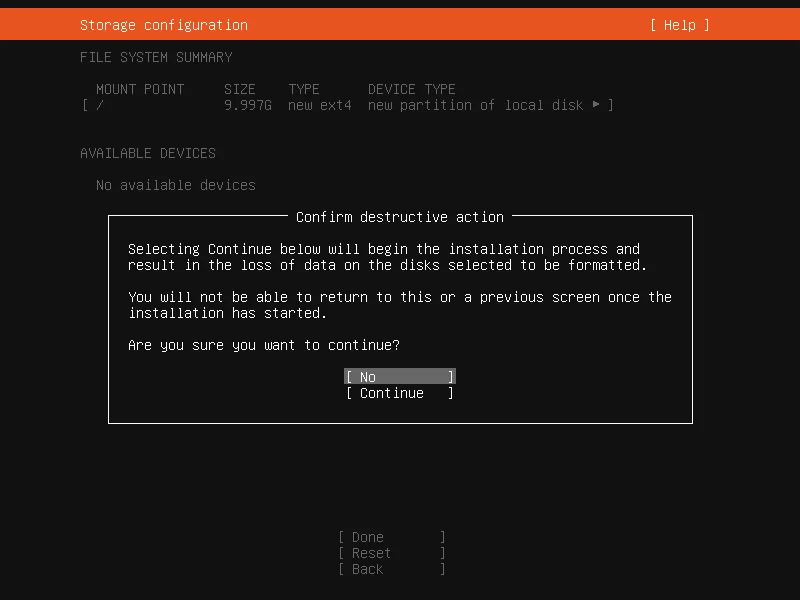
Ожидаемый результат: база системы начинает устанавливаться на SSD в фоне. До этой операции всё ещё можно было вернуться и изменить план без применения; подтверждение записи — важная граница.
Шаг 14. Создай имя сервера и пользователя
На экране Profile setup поля означают разное:
| Поле | Что ввести в нашем примере | Что это |
|---|---|---|
| Your name | Своё имя | Отображаемая подпись человека |
| Your server's name | ubuntu-srv |
Имя компьютера в системе |
| Pick a username | adminuser |
Логин, который будешь вводить при входе |
| Choose a password | Новый собственный пароль | Секрет для локального входа и sudo |
| Confirm your password | Тот же пароль ещё раз | Проверка, что не ошибся |
Для имени компьютера и логина используй простые латинские символы без пробелов; в имени компьютера допустим дефис. Имя человека может быть понятной подписью. Введи пароль в известной тебе раскладке и сохрани его надёжным способом.
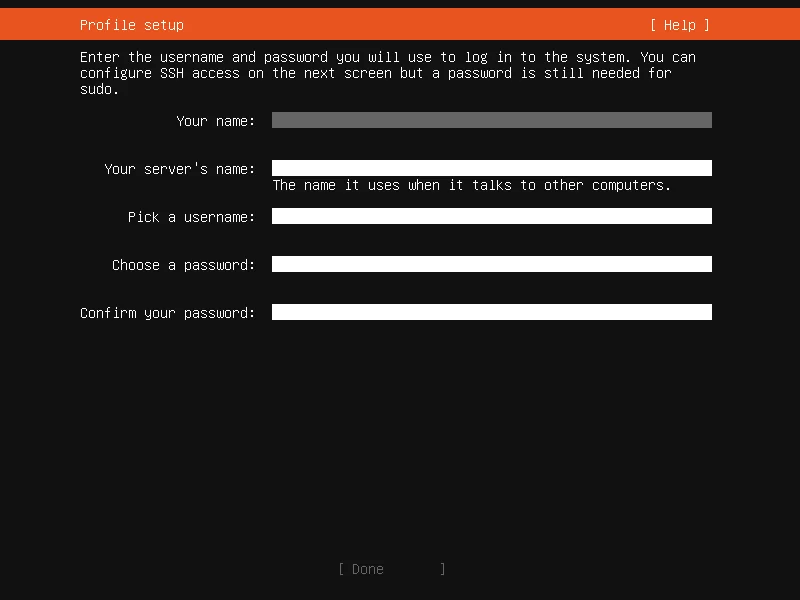
Первый пользователь Ubuntu Server получает возможность выполнять административные команды через sudo. Это похоже на повышение прав для отдельного действия в Windows. Не требуется постоянно входить под пользователем root.
Ожидаемый результат: знаешь будущий логин, пароль и имя компьютера. Это новый сервер, поэтому student и пароль нашей прежней ВМ здесь автоматически не появляются.
Шаг 15. Разреши подключение к Ubuntu с Windows
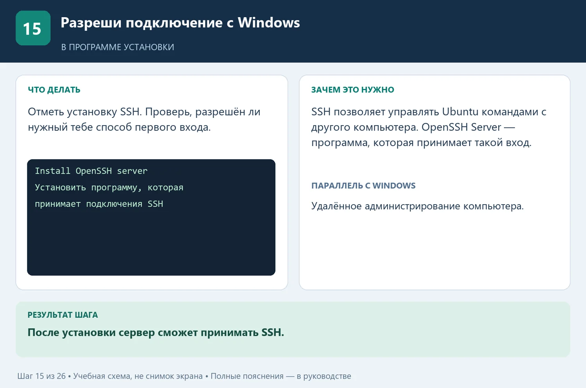
SSH — защищённый способ управлять другим компьютером с помощью текстовых команд. OpenSSH Server — программа на Ubuntu, которая принимает такие подключения.
На экране SSH configuration — «Настройка SSH» отметь Install OpenSSH server — «Установить OpenSSH Server». Терминал — окно с командами и ответами; через SSH ты получишь такое окно для Ubuntu на своём Windows-компьютере. Сам SSH не создаёт рабочий стол и не показывает графические окна сервера: ты получишь командную строку.
Порт — условный номер сетевого входа программы на компьютере. Стандартный порт SSH — 22, обычного HTTP — 80. Адрес отвечает на вопрос «какой компьютер», порт — «какая служба на нём».
Для первого входа в доверенной домашней локальной сети можно оставить разрешённый вход по паролю, если такой флажок есть. Публичный доступ через Интернет в этом примере не настраивается. Впоследствии настроишь вход по ключу, как в нашей ВМ.
Импорт ключа из GitHub/Launchpad — необязательный путь, требующий соответствующей учётной записи и заранее добавленного ключа. Для первого опыта его можно пропустить. Если импортировать ключ, установщик может по умолчанию отключить парольный SSH-вход; поэтому смотри фактические флажки.
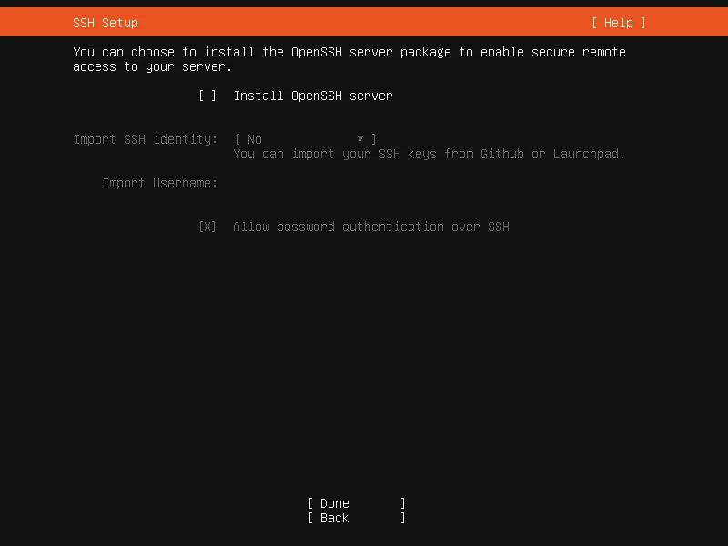
Ожидаемый результат: в установленной системе будет SSH-сервер. Без этого локальная консоль работает, но подключение по SSH может получить Connection refused.
Шаг 16. Пройди необязательные предложения
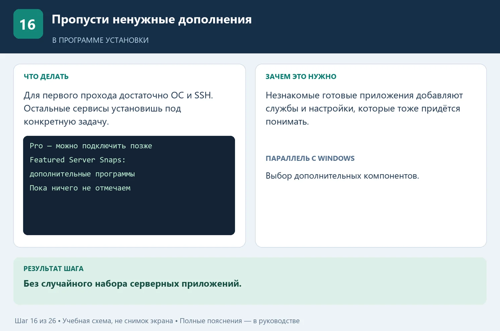
Если предлагается Ubuntu Pro, подключение можно отложить через Skip for now / Continue without… или аналогичный пункт. Это не обязательная регистрация для начала работы с базовой Ubuntu; условия дополнительных сервисов рассматриваются отдельно.
В Featured Server Snaps — «Предлагаемые приложения для сервера» установщик может предложить готовые программы. Snap — ещё один способ их установки. Для первого знакомства оставь список без отметок: сначала нужна понятная базовая ОС. Базу данных, контейнеры или файловый сервер установишь позже осознанно, с пониманием их настроек. Сам способ пакетов snap — отдельная тема, не замена понятию дистрибутива.
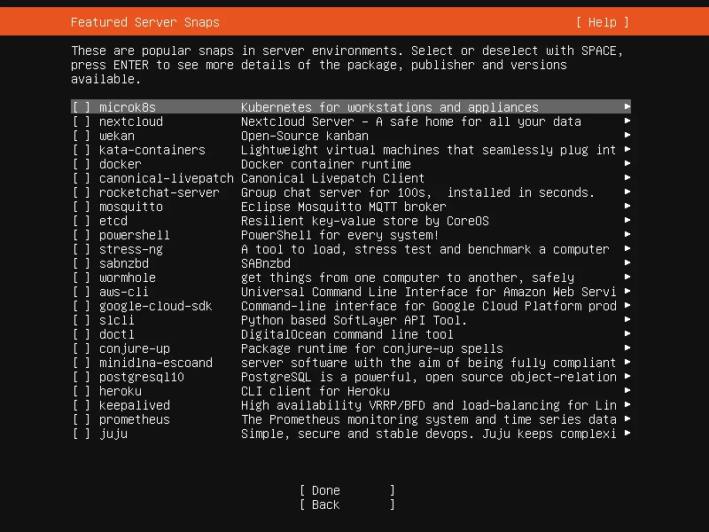
Ожидаемый результат: устанавливается базовая серверная система с выбранным SSH, без случайного набора незнакомых сервисов. Не каждый выпуск показывает все эти предложения и в одном порядке.
Шаг 17. Дождись завершения и загрузи ОС уже с SSD
Установщик копирует систему, настраивает загрузчик и, при доступной сети, может устанавливать обновления. Дождись явного сообщения об успешном завершении; время зависит от диска, компьютера и сети. Просмотр журнала помогает отличить ошибку от продолжающейся работы.
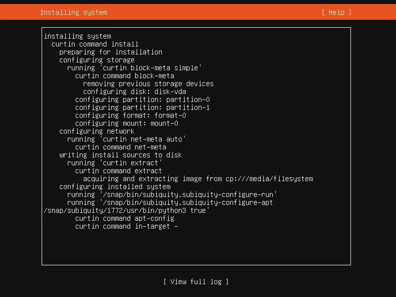
Нажми Reboot Now. Когда появится просьба убрать установочный носитель, извлеки флешку и нажми Enter. Если запроса нет, извлеки её в подходящий момент перезапуска и загрузи ubuntu / Ubuntu либо системный SSD в меню прошивки.
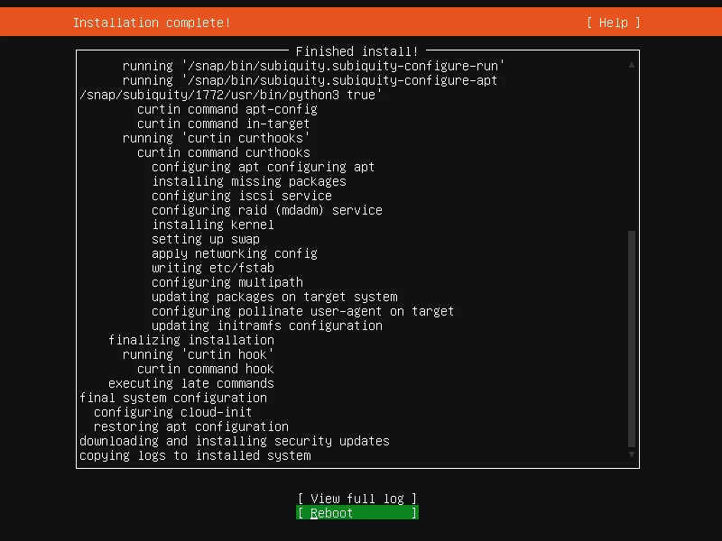
Параллель с Windows: установочный носитель больше не нужен для обычной загрузки; система теперь живёт на SSD.
Ожидаемый результат: после перезапуска появляется приглашение входа установленной Ubuntu. Если снова открылся мастер установки, компьютер опять выбрал USB; это не повод повторно размечать диск.
Шаг 18. Выполни первый локальный вход
На мониторе сервера будет примерно:
ubuntu-srv login:
Введи adminuser, Enter, затем заданный при этой установке пароль, Enter. При вводе пароля обычно не видно ни символов, ни звёздочек. Это нормально. После удачного входа появится:
adminuser@ubuntu-srv:~$
Оболочка — программа, которая читает введённые тобой команды и запускает действия. Приглашение команд — её строка «готов принимать ввод»: пользователь adminuser, компьютер ubuntu-srv, текущая папка ~ — домашняя, $ — обычный пользователь. Эту строку копировать перед командами не надо. Если Login incorrect, следующий запрос login: снова ждёт имя пользователя.
На физическом сервере локальная текстовая консоль не получает буфер Windows через обычное Ctrl+V. Сейчас короткие команды вводятся клавиатурой сервера; позже удобнее подключиться по SSH из Windows.
Ожидаемый результат: ты вошёл в установленную систему. ОС уже установлена; дальнейшие шаги — её настройка и проверка.
Шаг 19. Проверь систему, диск и время
Теперь команды выполняются в Ubuntu, по одной. Команда — имя действия или программы; слова и параметры после него уточняют, что сделать:
whoami
hostnamectl
cat /etc/os-release
lsblk -f
df -h /
free -h
| Команда | Что показывает |
|---|---|
whoami |
Текущего пользователя — ожидаем adminuser |
hostnamectl |
Имя машины и общие сведения |
cat /etc/os-release |
Выпуск дистрибутива; это текстовый файл |
lsblk -f |
Диски, разделы, типы файловых систем и точки подключения |
df -h / |
Размер и заполнение именно корневой файловой системы |
free -h |
Память в удобных единицах; смотри также available |
Задай московский часовой пояс, если нужен именно он:
sudo timedatectl set-timezone Europe/Moscow
timedatectl
sudo запросит пароль текущего пользователя; символы не отображаются. Часовой пояс задаёт отображение локального времени, а синхронизация NTP сверяет сами часы. В выводе смотри Time zone и System clock synchronized. Если синхронизации ещё нет, сначала проверь сеть, доступность службы и подожди её запуска; одной сменой часового пояса это не исправляется.
Ожидаемый результат: установлена нужная версия, диск виден, у / ожидаемая ёмкость, время понятно. Не нужно ожидать буквального совпадения объёмов со скриншотами нашей старой ВМ.
Шаг 20. Установи доступные обновления
В Ubuntu выполни:
sudo apt update
apt list --upgradable
sudo apt upgrade
APT — средство установки и обновления программ в Ubuntu. Ты пишешь команду apt, а оно скачивает нужные пакеты и устанавливает их. Пакет — подготовленный набор файлов программы; зависимости — дополнительные части, без которых программа не заработает. Обычно APT подбирает их сам.
apt update обновляет список доступных пакетов; apt upgrade обновляет сами установленные программы. Между ними можно посмотреть список через apt list --upgradable. Внимательно прочитай предложенные изменения и запрос подтверждения. Пример Do you want to continue? [Y/n]: Y означает Yes. До завершения работы пакетного менеджера не выключай компьютер.
Если есть вопросы о замене изменённых конфигураций, не отвечай автоматически на всё: для свежей установки обычно меньше таких ситуаций, но смысл конкретного запроса важен. Часть пакетов может быть отложена из-за зависимостей или поэтапного распространения; не надо сразу применять случайные команды принудительного обновления.
После обновления посмотри:
test -f /var/run/reboot-required && cat /var/run/reboot-required
test -f проверяет наличие файла; && запускает следующую команду только при успешной проверке. Если показано, что нужна перезагрузка, выполни sudo reboot, дождись загрузки и войди снова. Отсутствие вывода этой проверки само по себе не ошибка.
Предложение do-release-upgrade означает переход, например, 24.04 → 26.04; это отдельная процедура. Для первичной настройки текущего выпуска достаточно обновления его пакетов.
Ожидаемый результат: понятен статус обновлений, установка пакетов завершена без неразобранных ошибок.
Шаг 21. Подключись к физическому серверу с Windows
На сервере Ubuntu узнай адрес и состояние SSH:
ip -br address
ip route
systemctl status ssh --no-pager
Выбирай адрес проводного интерфейса, а не 127.0.0.1. Запиши фактический IPv4-адрес, например 192.168.1.50. ip route показывает маршруты, в том числе default via — шлюз. --no-pager выводит состояние сразу, без отдельного просмотрщика.
Служба — программа, которая работает в фоне без открытого окна, как службы Windows. В некоторых установках отдельный компонент ssh.socket ждёт подключения и только затем запускает службу SSH. Это называется запуском по запросу. Поэтому до первого подключения неактивная ssh.service сама по себе ещё не доказывает поломку. Если установленный OpenSSH использует такой режим, дополнительно посмотри systemctl status ssh.socket --no-pager. После успешного SSH-входа будет запущен обслуживающий процесс. В других установках ssh.service работает постоянно.
На Windows, подключённой к той же доступной сети, открой PowerShell или Windows Terminal:
ssh adminuser@192.168.1.50
Подставь свой адрес и логин. При первом входе клиент спрашивает о ключе сервера. На локальной консоли Ubuntu можно посмотреть отпечаток:
ssh-keygen -lf /etc/ssh/ssh_host_ed25519_key.pub
Сверь его с соответствующим ED25519-отпечатком клиента; после проверки подтверди доверие и введи пароль adminuser. Если клиент показывает другой тип ключа, сравнивают отпечаток именно этого типа, а не разные ключи между собой.
После входа строка adminuser@ubuntu-srv:~$ означает, что команды уже выполняются на сервере. Окно Windows осталось тем же, а оболочка стала удалённой.
Важно: используй настоящий адрес своего сервера в локальной сети. Для такого подключения не нужен проброс портов роутера в Интернет.
Ожидаемый результат: можно работать с Linux, сидя за Windows. Локальную консоль сервера пока оставь доступной для восстановления связи.
Шаг 22. Сделай адрес сервера предсказуемым
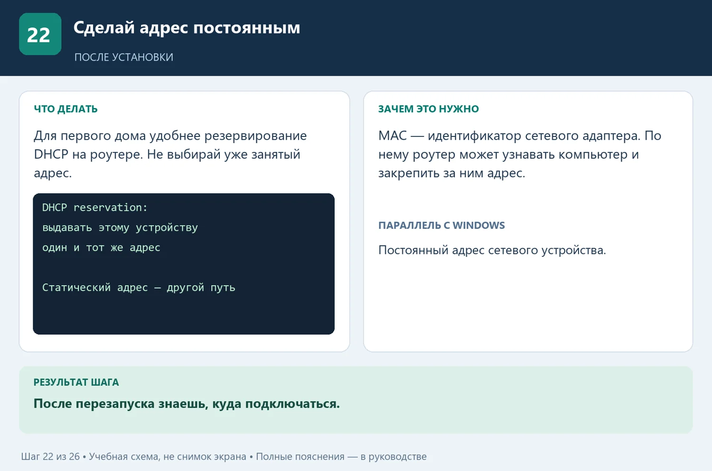
Адрес, полученный автоматически через DHCP, может измениться. MAC-адрес — идентификатор сетевого адаптера. Роутер может узнавать по нему компьютер и каждый раз выдавать ему один и тот же IP-адрес. Для домашнего первого сервера удобен вариант DHCP reservation / Address reservation на роутере: сервер продолжает автоматически получать настройки, а роутер закрепляет за его MAC-адресом постоянный IP. В панели роутера найди подключённый сервер, сверь MAC с выводом ip link, создай резервирование по правилам своей модели и проверь результат после переподключения/перезагрузки. Не назначай адрес, уже занятый другим устройством.
Названия пунктов роутера зависят от производителя. В организации постоянный адрес или резервирование согласуют с администратором сети.
Другой путь — статический адрес, то есть адрес, заданный вручную в самом компьютере. В Ubuntu для этого есть Netplan — средство настройки сети через текстовые файлы. Для неё нужны четыре реальных значения: адрес/маска, шлюз, DNS и имя интерфейса. Ниже только пример структуры, не универсальная команда для копирования:
network:
version: 2
ethernets:
enp3s0:
dhcp4: false
addresses: [192.168.1.50/24]
routes:
- to: default
via: 192.168.1.1
nameservers:
addresses: [192.168.1.1]
YAML — формат записи настроек с полями и отступами. Это не команда. Фактические файлы находятся в /etc/netplan/; имя файла не обязано совпадать между установками. Сначала смотрят существующую конфигурацию sudo netplan get, сохраняют копию исходного файла вне этого каталога, затем правят нужный YAML. Отступы — пробелами, не Tab; конфликтующие определения интерфейса в нескольких файлах могут объединяться.
После осознанной правки sudo netplan generate проверяет и генерирует конфигурацию, sudo netplan try пробует её с механизмом отката, если не подтвердить. Во время изменения сети по SSH связь может пропасть, поэтому первый раз делай это у локальной консоли. Для первого прохождения достаточно DHCP-резервирования; ручную статическую сеть не нужно включать дополнительно к нему без причины.
Ожидаемый результат: знаешь, как получить тот же адрес после перезагрузки. Подробности ручной конфигурации: сеть Ubuntu и Netplan.
Шаг 23. Добавь вход с помощью ключа
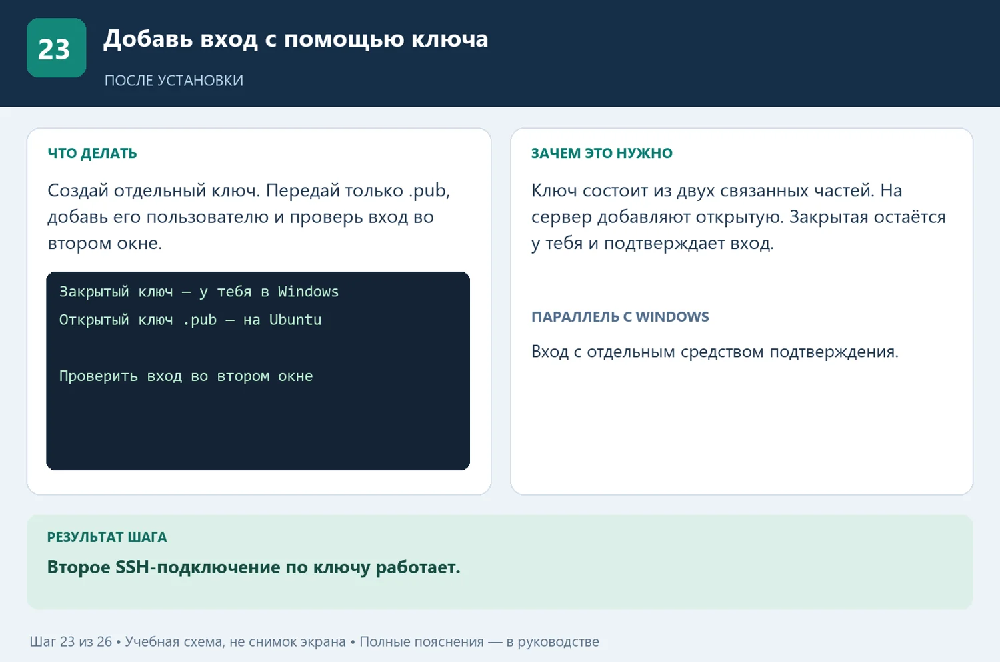
Это следующий удобный этап после проверенного входа по паролю. Закрытый ключ хранится на Windows, открытый добавляется пользователю Ubuntu. Файл с расширением .pub можно передавать серверу; закрытый ключ на сервер для этого копировать не нужно.
В PowerShell Windows создай отдельный ключ для нового сервера:
ssh-keygen -t ed25519 -f "$env:USERPROFILE\.ssh\ubuntu-physical"
Не подтверждай замену существующего файла с таким именем, если он уже используется: выбери новое имя. На предложение passphrase можно задать парольную фразу для защиты файла ключа; тогда её будут запрашивать при использовании ключа, если не настроен агент. Это отдельный секрет, не пароль пользователя Ubuntu.
Передай открытый ключ на сервер с пока ещё работающим парольным входом:
scp "$env:USERPROFILE\.ssh\ubuntu-physical.pub" adminuser@192.168.1.50:windows-key.pub
На Ubuntu, под adminuser, выполни:
mkdir -p ~/.ssh
chmod 700 ~/.ssh
cat ~/windows-key.pub >> ~/.ssh/authorized_keys
chmod 600 ~/.ssh/authorized_keys
mkdir создаёт каталог; chmod 700 ограничивает доступ к нему владельцем; cat ... >> добавляет строку публичного ключа в список разрешённых; chmod 600 разрешает читать и изменять этот файл владельцу. Добавлять ключ достаточно один раз.
Не закрывая прежний сеанс, открой второе окно Windows и проверь:
ssh -i "$env:USERPROFILE\.ssh\ubuntu-physical" adminuser@192.168.1.50
Если вход успешен, ключ настроен. Пароль sudo всё равно может требоваться. Отключение парольного SSH-входа выполняют отдельным шагом только после проверки ключа и наличия запасного способа доступа; в этом первом проходе оно не требуется. Официальное руководство OpenSSH для Ubuntu.
Ожидаемый результат: можешь подключаться с указанием своего нового ключа. Ключ нашей VMware-лаборатории автоматически не связан с новым сервером.
Шаг 24. Установи программу, которая будет показывать сайт
Установленная Ubuntu управляет компьютером. Теперь добавим программу для конкретной задачи — показа сайта.
Nginx — название такой программы; произносится примерно «энджин-икс». В нашем примере она получает запрос браузера и отправляет страницу сайта. Веб-сервер — название этой роли. Nginx не является обязательной частью любого Linux: здесь это учебный пример.
curl — программа для проверки сетевого адреса из командной строки. С её помощью посмотрим, отвечает ли наш сайт. HTTP — способ обмена запросами и ответами между браузером и сайтом.
В Ubuntu:
sudo apt install nginx curl
sudo systemctl enable --now nginx
systemctl status nginx --no-pager
curl -I http://127.0.0.1
| Часть | Что делает |
|---|---|
apt install nginx curl |
Устанавливает веб-сервер и клиент проверки HTTP с зависимостями |
systemctl enable --now nginx |
Включает автозапуск службы и запускает её сейчас |
systemctl status |
Показывает состояние; ожидаем active (running) |
curl -I |
Запрашивает заголовки ответа; ожидаем 200 OK для страницы по умолчанию |
active — работает сейчас; enabled — настроен запуск при загрузке. Это разные свойства. Установка пакета часто сама запускает службу, но явная проверка помогает понять результат.
В браузере Windows открой http://192.168.1.50/, подставив фактический адрес. Это прямой доступ к физическому серверу: порт 8088 и SSH-туннель нашей ВМ здесь не нужны. 127.0.0.1 на Windows означает саму Windows; поэтому туда нельзя подставить localhost и ожидать сайт другого компьютера.
Если локальный curl работает, а браузер нет, проверь адрес, сеть, firewall и порт 80, а не переустанавливай сразу Nginx. Файл стандартного сайта и конфигурация зависят от пакета; в Ubuntu обычно используются /var/www/html и /etc/nginx.
Ожидаемый результат: сервер выполняет первую прикладную задачу, доступную с другого компьютера.
Шаг 25. Разреши нужные сетевые подключения
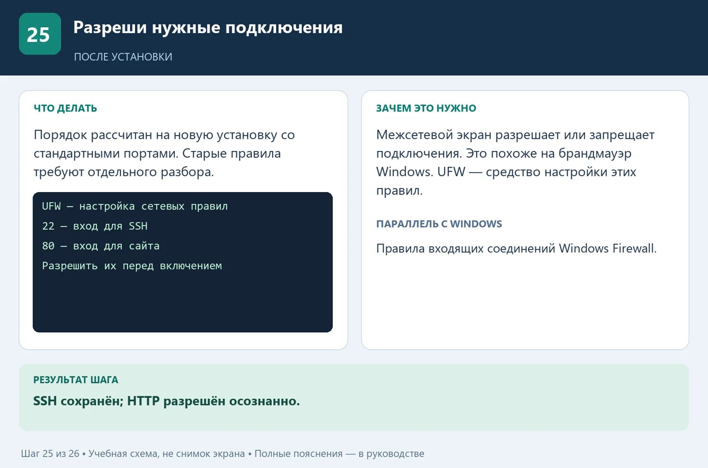
Firewall / межсетевой экран — правила, которые разрешают или запрещают сетевые подключения. Похожий инструмент Windows называется «Брандмауэр». UFW — программа, с помощью которой удобно задавать эти правила в Ubuntu. Она не заменяет пароль, ключ и обновления.
Сначала посмотри текущее состояние. Для новой установки без чужих существующих правил, со стандартным SSH на 22 и учебным HTTP на 80, порядок такой:
sudo ufw status verbose
sudo ufw allow 22/tcp
sudo ufw allow 80/tcp
sudo ufw enable
sudo ufw status verbose
TCP — способ передачи данных по сети, которым пользуются SSH и обычные сайты. В записи 22/tcp число 22 — номер сетевого входа SSH. allow 22/tcp разрешает стандартный SSH, allow 80/tcp — HTTP Nginx; enable включает обработку правил. Если UFW отсутствует, сначала устанавливается sudo apt install ufw. Если у SSH выбран другой порт, правило должно соответствовать реальному порту.
Сначала разрешают SSH, затем включают firewall. Сохрани текущий сеанс и проверь вход из второго окна. Первое выполнение удобно делать при доступной локальной консоли. Наличие уже действующих правил меняет ситуацию: это не универсальная инструкция для перезаписи чужого firewall.
Этот минимальный пример разрешает указанные порты от любых источников, которые могут достичь сервера. В рабочей сети доступ администратора обычно ограничивают нужной подсетью/адресами по её реальным условиям. Перенаправление портов с Интернета в этом руководстве не создаётся.
Ожидаемый результат: правила понятны, SSH сохраняется, учебный сайт доступен. Официальная документация UFW.
Шаг 26. Перезагрузи и проверь, что сервер действительно готов
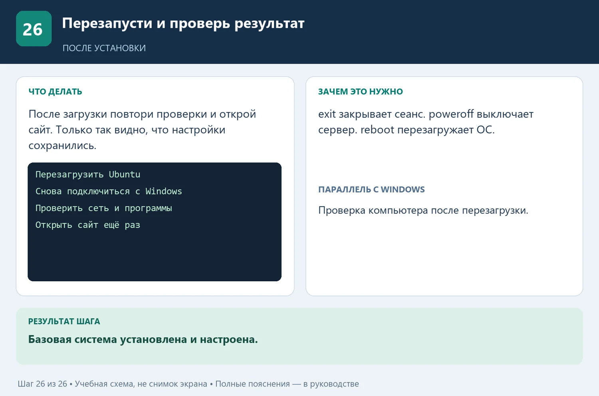
Завершающая проверка первичной настройки — настоящий перезапуск:
sudo reboot
SSH разорвётся, потому что сервер перезагружается. Подожди загрузки и подключись снова. Затем в Ubuntu проверь:
hostnamectl
ip -br address
systemctl is-active ssh nginx
systemctl is-enabled ssh nginx
df -h /
timedatectl
curl -I http://127.0.0.1
И снова открой сайт в браузере Windows по реальному адресу сервера. Так проверяется не только «я запустил программу один раз», но и сохранение сети, автозапуска и доступа после перезагрузки.
При режиме SSH по запросу учитывай также состояние/автозапуск ssh.socket, как описано в шаге 21. Отдельное слово disabled у ssh.service не нужно трактовать в отрыве от успешного повторного входа и устройства запуска SSH.
Корректно выключить сервер — sudo poweroff. Команда exit лишь завершает текущую оболочку/SSH, а сам компьютер продолжает работать. Закрытие окна PowerShell тоже не является выключением сервера и не обязано останавливать его службы.
Ожидаемый результат: ОС установлена с ISO на SSD, известны реквизиты и адрес, работают обновления/сеть/SSH, первый сервис доступен после перезапуска. Это базовая готовность учебного сервера, а не утверждение о готовности любой рабочей системы.
После установки: что настраивают под конкретную задачу
Теперь вместо общего «настроить весь Linux» появляется конкретная цель. Веб-серверу понадобятся домен, HTTPS, приложение и резервные копии; файловому серверу — каталоги, права и общий доступ; 1С/СУБД — поддерживаемые версии, расчёт памяти и дисков, настройки производителя и обслуживание. Эти задачи нельзя решить одной одинаковой командой для всех серверов.
Для машины с важными данными заранее организуют резервные копии на другой носитель/систему, проверяют восстановление, наблюдают за свободным местом и состоянием дисков. RAID помогает пережить некоторые отказы диска, но не заменяет копию от ошибочного удаления или повреждения данных. На физическом сервере также учитывают питание/ИБП и доступ к консоли, когда сеть недоступна.
Сохрани паспорт установки: модель и диски, Ubuntu/версия, имя компьютера, логин, способ хранения пароля и ключа, адрес/MAC, способ выдачи адреса, список служб, место резервных копий. Секреты не стоит включать в публичные скриншоты и общую документацию.
Что одинаково у других Linux, а что придётся переучить
Общий порядок похож: образ → установочный носитель → загрузка → язык/клавиатура → сеть → диски → пользователь → установка → обновления → удалённый доступ → нужные службы. Но экраны Ubuntu Server нельзя буквально применять ко всем дистрибутивам.
| Что сравниваем | Что может отличаться |
|---|---|
| Установщик | Текстовый/графический интерфейс, порядок экранов, разметка |
| Пакеты | В Ubuntu/Debian — APT/.deb; в RPM-системах часто другие команды, а у Альт есть APT-RPM |
| Сеть | Netplan, NetworkManager и другие механизмы в зависимости от ОС/комплектации |
| Защита | AppArmor, SELinux и дополнительные механизмы конкретных российских редакций |
| Учётные записи | Возможность/политика root, sudo, группы администратора |
| Поддержка приложений | Нужна совместимость с конкретным дистрибутивом, версией и редакцией |
Навыки понимания путей, прав, пользователей, процессов, сети и журналов остаются полезными. Сначала имеет смысл пройти одну понятную установку Ubuntu, а затем сравнивать её с целевой ОС.
Если что-то не получилось
| На каком этапе | Что проверить первым |
|---|---|
| Флешка не загружается | Правильность записи ISO, Boot Menu, порт, режим UEFI/Legacy по модели |
| В установщике нет SSD | Кабели/питание, контроллер и драйверы, видимость диска в прошивке; не менять RAID наугад |
| Нет адреса сети | Кабель, интерфейс, DHCP/правила сети |
| Пакеты не скачиваются | Адрес, маршрут, DNS, доступность зеркала, прокси при его необходимости |
| После установки снова мастер | Компьютер опять загрузился с USB |
| Пароль «не вводится» | Невидимый ввод нормален; проверить раскладку, Caps Lock, этап login/password |
| SSH refused | Нужный IP/порт, установлен ли openssh-server, запущена ли служба |
| SSH timeout | Сеть/маршрутизация/firewall/завершение загрузки |
| Permission denied (publickey) | Пользователь, ключ и его установка; это не сообщение о неверном Linux-диске |
| Сайт работает только локально | Адрес назначения, порт 80, firewall, доступ из сети Windows |
Источники, изображения и статус этой инструкции
Порядок и значения настроек сверены с официальной документацией во время подготовки. Самостоятельная инструкция не копирует обещания старых учебников о достаточности нескольких гигабайт диска: ресурсный ориентир здесь учебный и указан отдельно.
- Canonical: актуальный разбор экранов установщика Subiquity.
- Canonical: разметка, LVM, шифрование и загрузчик.
- Canonical: создание USB, раздел для Windows/Rufus.
- Официальные загрузки Ubuntu Server.
- Rufus: официальный сайт.
- Canonical: проверка ISO.
- Canonical: сеть, OpenSSH, UFW.
Официальные снимки sbs-language, sbs-keyboard, sbs-network, sbs-proxy, sbs-mirror, sbs-storage, sbs-confirm-storage, sbs-identity, sbs-ssh, sbs-snaps, sbs-logs, sbs-complete: Canonical Ltd., страница Screen-by-screen installer walk-through, лицензия CC BY-SA 4.0. Изображения сохранены без изменений в guide/installer-reference, подписи добавлены рядом. В них встречаются виртуальные диски и примеры старого вида интерфейса; они служат справкой о назначении полей, а не доказательством физической установки на твоём оборудовании. Собственные цветные карточки расположены в guide/install-steps.
На подготовленном физическом компьютере ничего не форматировалось; существующая VMware-ВМ не переустанавливалась. Команды и адреса в этом руководстве — последовательность для будущей самостоятельной установки. Если хочешь идти по ней на конкретном железе, понадобятся модель компьютера, список его дисков и выбранный носитель; особенно внимательно нужно проверить шаги 4 и 12–13.